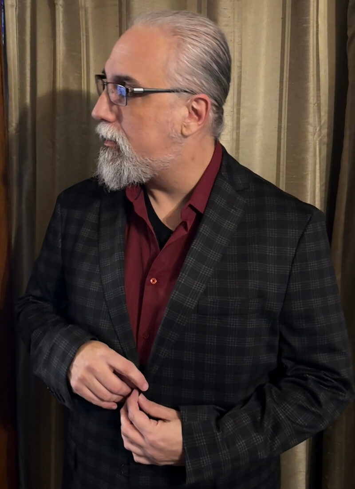

Jason R. St. John
Lead Software Architect
Full-Stack Engineer
My first computer didn't play games.
So I learned BASIC and taught it to.
We've been learning from each other ever since.
jasonobject.work
Upstate NY + remote
